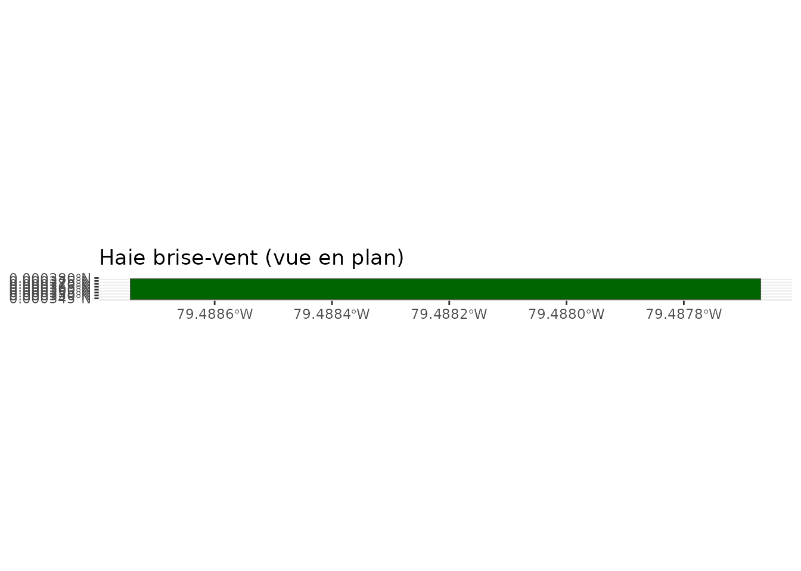
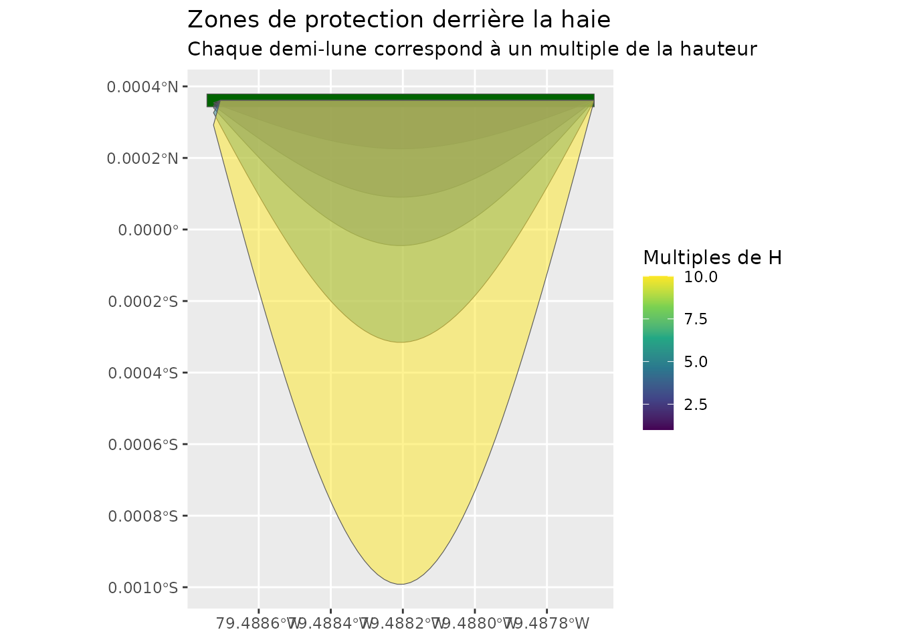
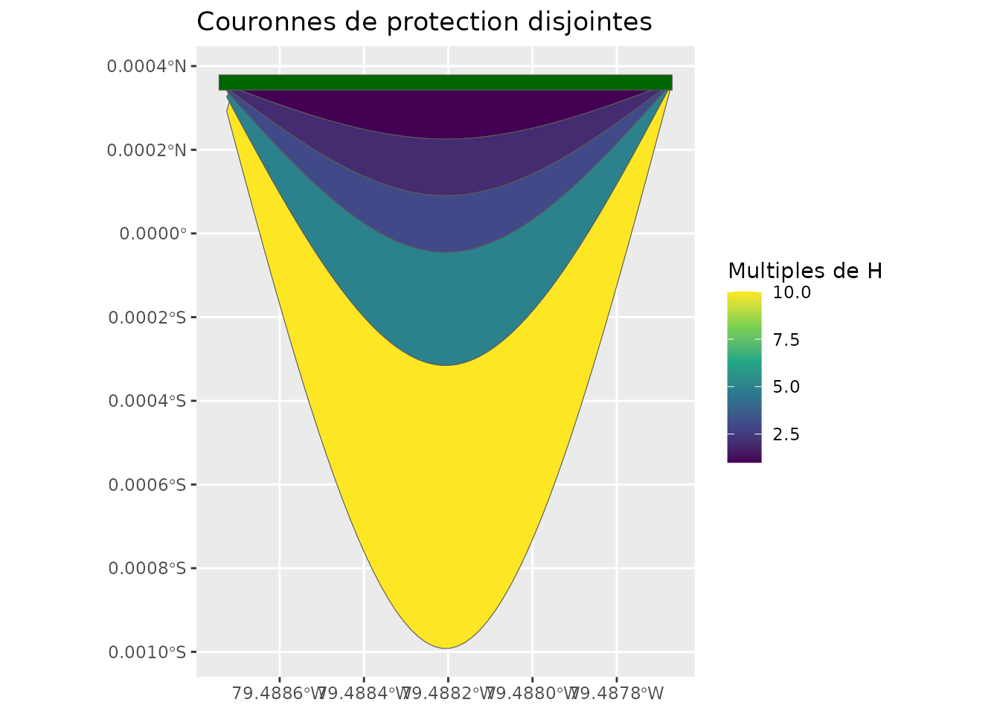
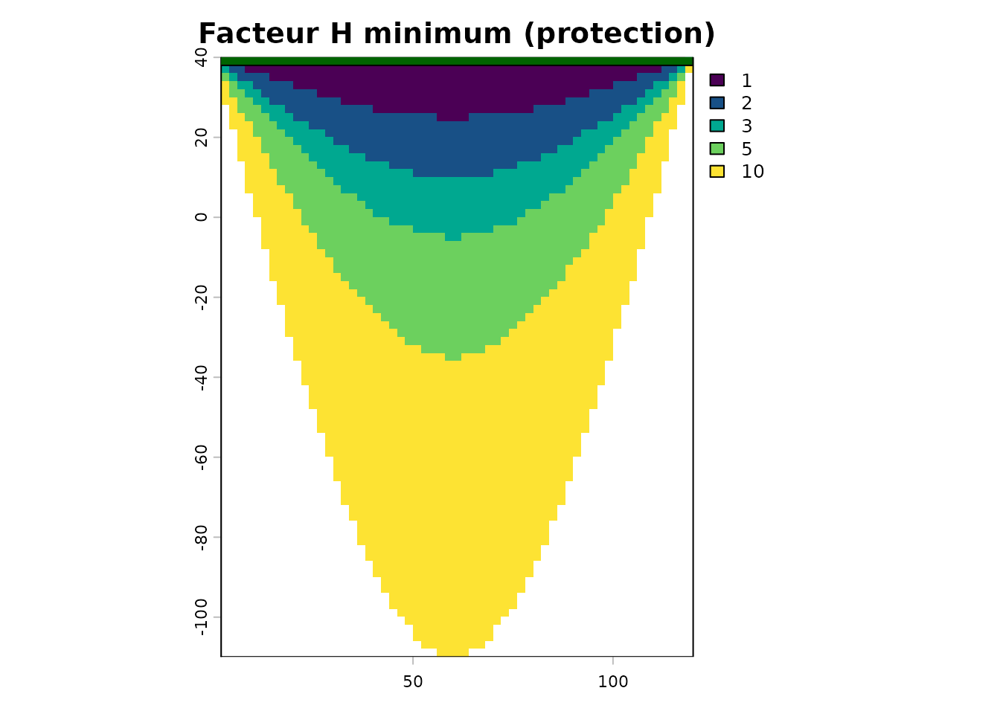

Zones de protection des haies brise-vent
Source:vignettes/zones-protection-vent.Rmd
zones-protection-vent.RmdIntroduction
Les haies brise-vent protègent les cultures en réduisant la vitesse
du vent sur une distance proportionnelle à leur hauteur H.
Le package covariablechamps fournit une chaîne d’outils
pour :
- Construire les zones de protection (demi-lunes)
derrière chaque haie pour plusieurs multiples de la hauteur
(
1H,2H,5H, …). - Fusionner ces zones en couronnes disjointes.
-
Rasteriser un gradient de protection
(
facteur Hminimum par pixel).
Ce guide utilise une haie synthétique afin d’être entièrement reproductible, sans téléchargement de données LiDAR.
Création d’une haie synthétique
Une haie est décrite par un rectangle orienté. La fonction
calculer_zones_vent_spline() attend un objet
sf avec les colonnes cluster,
x_center, y_center, hauteur_p95,
largeur, longueur, angle_deg et
n_arbres.
haie <- st_sf(
cluster = 1,
n_arbres = 40,
hauteur_p95 = 15,
largeur = 4,
longueur = 120,
aspect = 30,
linearite = 50,
angle_deg = 0,
x_center = 60,
y_center = 40,
classe = "haie_brise_vent",
geometry = st_sfc(
st_polygon(list(matrix(c(
0, 38, 120, 38, 120, 42, 0, 42, 0, 38
), ncol = 2, byrow = TRUE))),
crs = 32618
)
)
ggplot() +
geom_sf(data = haie, fill = "darkgreen") +
coord_sf() +
labs(title = "Haie brise-vent (vue en plan)")
Calcul des zones de protection
La direction_vent est donnée en degrés (0 = Nord, 90 =
Est). Le vent doit être perpendiculaire à la haie pour obtenir des
demi-lunes : ici, une haie orientée est-ouest et un vent de secteur nord
(0°).
zones <- calculer_zones_vent_spline(
haies_rectangles = haie,
direction_vent = 0,
facteur_hauteur = c(1, 2, 3, 5, 10),
n_points = 60
)
ggplot() +
geom_sf(data = haie, fill = "darkgreen") +
geom_sf(data = zones, aes(fill = facteur_h), alpha = 0.5) +
scale_fill_viridis_c(name = "Multiples de H") +
coord_sf() +
labs(title = "Zones de protection derrière la haie",
subtitle = "Chaque demi-lune correspond à un multiple de la hauteur")
Fusion et couronnes disjointes
fusionner_zones_vent() fusionne toutes les haies pour un
même facteur H et rend chaque couronne disjointe des
couronnes plus petites, ce qui évite les recouvrements.
couronnes <- fusionner_zones_vent(zones)
ggplot() +
geom_sf(data = couronnes, aes(fill = facteur_h)) +
geom_sf(data = haie, fill = "darkgreen") +
scale_fill_viridis_c(name = "Multiples de H") +
coord_sf() +
labs(title = "Couronnes de protection disjointes")
Gradient de protection (facteur H minimum)
rasteriser_zones_gradient() convertit les zones en un
raster où chaque pixel contient le facteur H
minimum parmi toutes les zones qui le couvrent. Un
pixel couvert par 1H, 3H et 5H
recevra la valeur 1.
gradient <- rasteriser_zones_gradient(zones, resolution = 2)
terra::plot(gradient, main = "Facteur H minimum (protection)",
col = hcl.colors(10, "viridis"))
plot(st_geometry(haie), add = TRUE, col = "darkgreen", border = "black")
Intégration avec les données LiDAR
Dans un flux réel, les rectangles de haies proviennent de la
détection LiDAR avec extraire_classifier_haies_lidar()
:
# 1. Télécharger le LiDAR ponctuel autour du champ
lidar <- telecharger_lidar_ponctuel(champ, buffer = 100)
# 2. Détecter et classifier les arbres/haies
arbres <- extraire_classifier_haies_lidar(lidar$nuage_points, hmin = 2)
# 3. Construire les zones à partir des rectangles de haies
zones <- calculer_zones_vent_spline(
haies_rectangles = arbres$haies_rectangles,
direction_vent = 270,
facteur_hauteur = 1:20
)
# 4. Fusionner puis rasteriser le gradient de protection
couronnes <- fusionner_zones_vent(zones)
gradient <- rasteriser_zones_gradient(couronnes, resolution = 2)Résumé
| Fonction | Rôle |
|---|---|
calculer_zones_vent_spline() |
Crée les demi-lunes par multiple de H
|
fusionner_zones_vent() |
Fusionne et rend les couronnes disjointes |
rasteriser_zones_gradient() |
Raster du facteur H minimum par pixel |
rasteriser_zones_gradient_v2() |
Variante équivalente |